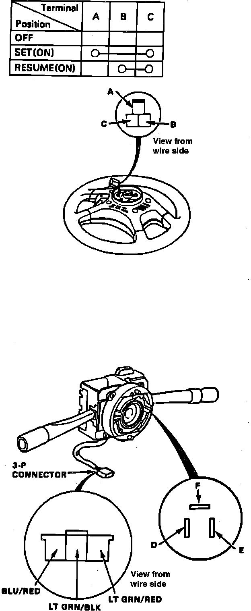
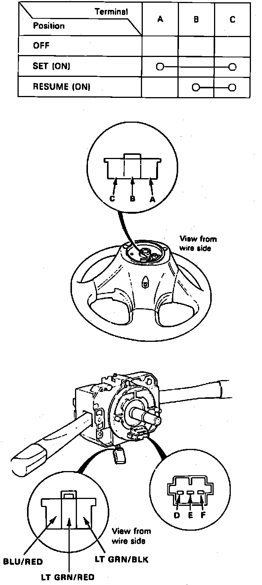

Set/Resume/Cancel Switch
Fig. 23 Set/resume/cancel Switch:

Fig. 24 Set/resume/cancel Switch:

1. Remove steering wheel and check for continuity between terminals in each switch position as shown in Figs. 23 and 24.
2. Remove column cover, then disconnect 3-P connector.
3. On 1989 models, while turning slip ring, check for continuity between the blue/red and F terminal, light green/red and D terminal, and light green/black and E terminal.
4. On 1990-91 models, while turning slip ring, check for continuity between the blue/red and D terminal and light green/red and F terminal.
5. On all models, if any one or more do not have continuity, replace switch.